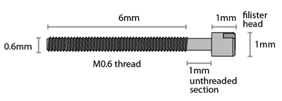
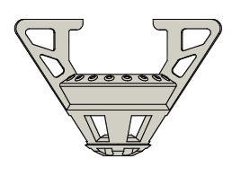
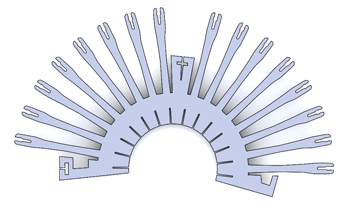
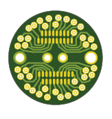

The flexDrive is using long, thin custom screws for the drive mechanism. Due to the spring mechanism, the screw does not require a special retaining ring to stabilize the drive mechanism. We are using 0.6mmx7mm screws made from stainless steel or titanium. The last mm under the screw head is left smooth in order to ensure a smooth low-friction fit between screw and spring.

A commonly used design for drive screws is to use half-circle heads that leave less ambiguity about the current screw angle when adjusting drives, and are a bit more stable:

We are currently getting our screws made at Antrin Miniature Specialties, Inc. The drawing on this page has all the information needed to oder this screw type. At reasonably large quantities >=1000 pcs, the custom screws are cheaper than any of the inferior off the shelf alternatives that we could find, even for TI screws. Screws can typically be re-used a few times.
Drive body
The drive body of the flexDrive is printed from ABS like material from a CAD design file (solidworks).

A relatively high quality 3d print is required because otherwise the snap-fit features for the guide tubes can't be resolved and the holes for the drive screws would fill in completely. The only 3d printing method that we have tested is Stereolithography. It seems unlikely that lower-cost current generation Fused Deposition Modeling machines would give acceptable results for the flexDrive. We are currently using APProto's Acura 55 process with very good results. Even with high print quality, drive bodies need to be prepared by drilling out and 'tapping' screw holes before using the bodies.
Drive spring
The spring that forms the main drive mechansim of the flexDrive is cut from a thin piece of spring steel (Blue-Finished and Polished 1095 Spring Steel .002" Thick, we buy from McMaster) using a wire EDM process.

Any shop with access to a wire EDM that is set up for a relatively standard 13mil kerf width should be able to use the provided source files. The CAD files in the repository are already set up to account for the kerf, resulting in a screw opening of ~0.606mm ID - if your machine shop uses a different process, even if the kerf width is smaller, the files need to be modified accordingly. Usually, the Solidworks parts have to be exported as DXF (make sure the units are correct, we have to set everything to inches) before they can be sent off to be machined.
EIBs
For microwire electrodes, the electrical connection between the electrode and the headstage is made through a printed circuit board that is attached to the top of the drive implant and provides a number of vias that accomodate the electrode wires.
The flexDrive can be used with any EIB that does not significantly exceed a circular footprint of 16.5mm diameter, such as the 16 channel EIBs made by neuralynx.

We are using custom made EIBs that we design in the free version of Eagle. The standard EIB with 32 channels for use with 16 stereotrodes can be fabricated with moderate tolerances, we're mostly using Sunstone's valueProto service.
For the EIB variant with 64 channels for use with 16 tetrodes or 16 pairs of stereotrodes, a 5/5 mil spacing is required. We have been getting good results from Advanced Circuits. For all standard EIB designs in the repository we include zip files with gerber files ready for fabrication.